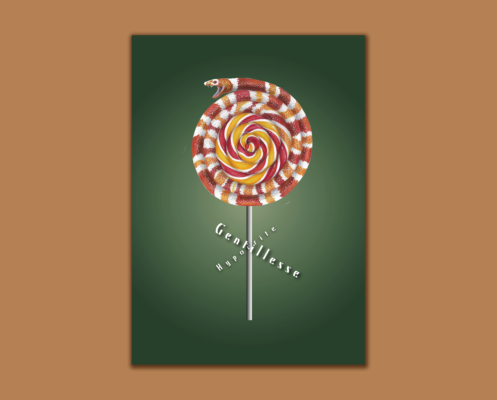

This is a relatively early project when I was in Design 2. We need to learn michal Batory's poster art style, combine two objects, and express an emotion through an exaggerated visual experience. The way we achieved it was by hand-drawing, drawing the main vision of the poster with an alcohol marker. My keyword is "Hypocrite", and I combine candy and viper to express this meaning.
Back to Home
Tianyi Qin ECV Bordeaux, France